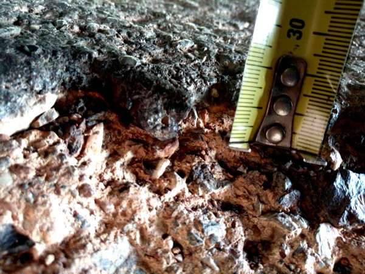
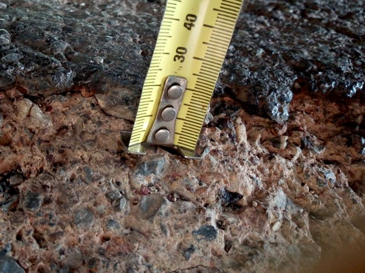

ในความเป็นจริงพวกเขาได้ผลประโยชน์จากรัฐบาล ด้วยสัญญาจำนวนมาก งบประมาณมหาศาล ครั้งแล้วครั้งเล่า ที่อาชญากรเหล่านี้ขโมยเงินจากผู้ชำระภาษีคนไทย ที่ทำงานอย่างซื่อสัตย์มาโดยตลอดอย่างพวกเรา จะว่ากันให้ดูชัดเจนก็ไม่ต่างจากอาชญากร ที่แฝงตัวอยู่กับท้องถิ่นนั้นๆมาโดยตลอด อย่างไม่มีเคยรู้สึกละอายนั่นเอง..
ไม่ต้องไปพูดถึงโครงการรถไฟความเร็วสูง ที่จะใช้งบประมาณกี่พันล้าน เพื่อขนถ่ายขยะมาดั๊มให้คนไทย มาสู่ประเทศไทย ทำไมเราต้องไปตามกระแสโลกที่กำลังพามนุษยชาติล่มสลาย จากเทคโนโลยีทางไซเบอร์ ที่นำความหายนะมาสู่โลกมากขึ้นๆทุกวัน ทำไมเราไม่หันมาใส่ใจสิ่งรอบตัว ว่าพัฒนาไปได้ดีแค่ไหน แค่การสร้างถนนให้มีคุณภาพทัดเทียมประเทศต่างๆที่เขาพัฒนาแล้วเรายังทำไม่ได้
พวกคุณคิดว่าจะพัฒนา สนับสนุนคนในท้องถิ่นให้ผลิตสินค้า เพื่อรองรับการส่งออกที่จะเกิดขึ้นอย่างรวดเร็วในอนาคต เมื่อรถไฟความเร็วสูงถูกสร้างเสร็จได้อย่างนั้นหรือ หากการการขนสินค้าจากชุมชน ยังต้องค่อยๆคลานออกจากหมู่บ้านผ่านถนนลูกรัง หรือถนนลาดยางที่เต็มไปด้วยหลุมและบ่อ เพื่อให้ทันขึ้นรถไฟขบวนสุดท้ายอยู่
เป็นที่รู้กันว่าบ้านเมืองไหนที่มีถนนดีๆไปถึง ความเจริญก็เข้าไปถึงได้ง่ายเช่นกัน จะเป็นสิ่งที่ดีมากๆที่จะเกิดขึ้นในชีวิตๆหนึ่งที่ได้เกิดมาของคนในท้องถิ่น หากรัฐบาลจะหันมาพัฒนาถนนในประเทศให้มันดี อย่างที่งบประมาณมาลงแต่ละครั้ง ช่วย กำจัดคอรัปชั่นทั้งหลายที่กินกันมายาวนานให้หมดไปสักทีเถอะ แม้แต่พื้นฐานของการจะนำพาเศรษฐกิจที่ดี มาสู่คนส่วนใหญ่ของประเทศยังทำไม่ได้ แล้วจะไปฝันหาพึ่งพาการส่งออกไปต่างประเทศกันอยู่ได้ยังไง ร้อยทั้งร้อยขาดดุลการค้าให้ต่างชาติเพิ่มสูงขึ้นไปอีกทุกๆปี อีกทั้งในมิช้า ประเทศไทยจะเป็นแหล่งเก็บสะสมขยะ
(สินค้าราคาถูก และด้อยคุณภาพที่นำเข้ามาดั๊มในเมืองไทย ) รวดเร็วมากขึ้นอีกต่างหาก หันมาไตร่ตรองความจริงอันนี้ เราจะยังตามให้ทันโลกไปทำไม ในเมื่อมองออกไปก็เจอแต่ความหายนะกำลังเพิ่มมากขึ้นขนาดนั้น หากเศรษฐกิจที่มันกำลังแย่อยู่ขณะนี้ สืบเนื่องจากการกระทำของคนกลุ่มหนึ่งที่สร้างไว้ และทั้งๆที่รู้กันอยู่ว่า เศรษฐกิจทั่วโลกถดถอย แล้วจะตามมันไปทำไมอีก หันมาสร้างฐานของเราให้มั่นคง ให้คนของเราอยู่ดีมีความสุขจะไม่ดีกว่าหรือ.......แล้วคนอื่นๆคิดยังไง?????
รัฐบาลไม่เคยมีเงินงบประมาณเพียงพอสำหรับสิ่งใดๆ และโรงเรียนจำนวนมากยังต้องไปขอบริจาคเพื่อดำเนินการบำรุงรักษาอาคารสถานที่อย่างเร่งด่วน อยู่เสมอๆ
ใช่สิ..งบประมาณรัฐบาลล้านล้านล้านล้านสูญสิ้นไปจากการทุจริต จำนวนมหาศาล แม้แต่การสร้างถนนครั้งแล้วครั้งเล่านี่ก็เป็นเรื่องเล็กๆที่ชัดเจน ในขณะที่รัฐบาลจะมีความซับซ้อนในการทุจริตอื่นๆอีกมั้ยนั้น?????:
 1ซม. ยางมะตอย  1.5ซม. ยางมะตอย
จากสัญญาโครงการรับเหมา สำหรับถนนสายนี้ เป็นแอสฟัลด์ (ยางมะตอย) ที่จะต้องมีความหนา 5 ซม.
จากผลงานหลังสร้างได้ไม่นานแล้วเกิดการชำรุด จะเห็นว่าความจริงแล้ว ความหนาของถนนแอสฟัลต์ 5 ซม. น่าจะมีการลาดจริง อยู่ที่ความหนา 2 ซม. แล้วบดอัดจนได้ 1 ซม.หรือน้อยกว่า 1 ซม!...เชื่อหรือไม่?? ต้องสอบถามผู้สัญจรเป็นประจำทุกๆวัน!!!
และถนนทุกสาย ที่บริษัท เหล่านี้สร้างขึ้นนั้นเหมือนกันหมด คือหลังเสร็จงานไม่นาน (ไม่เกิน1-2เดือน ) ต้องการได้รับการซ่อมแซมอย่างต่อเนื่องตลอดไป
ในความเป็นจริง ถนนส่วนใหญ่ที่สร้างกันขณะนี้ไม่สามารถซ่อมแซมได้ แต่ผู้รับเหมาชอบที่จะซ่อมปะเล็กๆน้อยๆกันเป็นอย่างมาก ร้อยทั้งร้อยถนนยางมะตอยนั้นถูกสร้างบนส่วนผสมของดินมากกว่า 90% ( ซึ่งไม่ใช่หลักการมาตรฐานถนนที่มีคุณภาพดีแน่ๆ) ทำให้ซ่อมยังไงก็พังอีกในไม่ช้า แรงบีบอัดจากรถคันล้วคันเล่า หรือการที่น้ำฝนกัดเซาะดินที่อยู่ใต้ยางมะตอย ทำให้ถนนพังในไม่ช้า ไม่ต้องจบวิศวกรก็ดูออก!!
ดีที่สุดคือต้องรื้อสร้างใหม่ทั้งหมดอีกรอบ ซึ่งต้องรองบประมาณใหม่อีกเมื่อไรล่ะ งบที่จะใช้จ่ายอีกก็ไม่ใช่น้อย ภาษีที่เราจ่ายไปพัฒนาประเทศใช้ได้คุ้มค่าจริงๆได้มั้ย ทำไมไม่ควบคุมให้ได้มาตรฐานตั้งแต่ครั้งแรก แต่อย่างว่าเป็นที่รู้ๆกันมาตลอดว่า เงินงบที่ประมูลมาต้องจ่ายใต้โต๊เป็นเท่าตัว และจะเอากำไรจากที่ไหนหากต้องทำถนนให้ได้ตามมาตรฐานจริงๆ 100%
รัฐบาลจะต้องเป็นแบบอย่างของการปลอดคอรัปชั่น ให้มีการจัดการลงโทษบริษัทผู้รับเหมานั้นๆ และเจ้าหน้าที่ของรัฐที่รับผิดชอบ อย่างจริงจัง เมื่อตรวจพบการทุจริต เพื่อให้เป็นเยี่ยงอย่างกับบริษัทผู้รับเหมารายอื่นๆ จะดีกว่ามั้ยที่จะมีการ จ้างเหมาบริษัทเอกชนที่มีความรู้ ความเชี่ยวชาญตรวจสอบทีละขั้นตอนอย่างจริงจัง แทนการให้ฝ่ายโยธาของท้องที่นั้นๆคอยตรวจสอบ ( ซึ่งผ่านฉลุยทุกครั้ง แล้วพอชาวบ้านท้วงติงก็เลี่ยงไปว่าบริษัทเขารับประกัน หากพังมาซ่อมให้ ซึ่งก็พังทุกครั้ง!! แล้วก็มาซ่อมบ้างไม่มาบ้าง หรือจะมาแต่รองานที่อื่นเสร็จก่อน มันสมควรแล้วหรือที่ถนนที่เพิ่งสร้างเสร็จไม่ทันถึงเดือนต้องมารอปะซ่อม??? ) มีอาสาสมัครมากมายในพื้นที่ผู้เป็นกลางที่เต็มใจช่วยสอดส่องขั้นตอนการสร้างไปด้วยอีกทาง โดยอาจให้ชาวบ้านลงมติเลือกคนเหล่านั้น เป็นตัวแทนชาวบ้าน นอกเหนือจากผู้ใหญ่บ้าน จะดีหรือไม่หากให้สิทธิ์เขาเหล่านั้น??
ต้องขอย้ำว่า รัฐบาลจะต้องไม่เป็นตัวอย่างของอาชญากรเหล่านี้ในการคอรัปชั่น และปฏิบัติตามคำมั่นสัญญา 'Zero Tolerance' จับกุม บริษัท อาชญากรรมเหล่านี้ และจำคุกพวกเขา จากการโจรกรรมหลายพันล้านจากประชาชน โดยการละเมิดสัญญาการสร้างถนนให้ตรงตามมาตรฐาน !......
“ เชื่อหรือไม่ว่างบประมาณอีกหลายสิบปีที่ไม่ต้องเสียไปกับการสร้างถนนใหม่ สามารถนำมาปรับบปรุงโรงเรียน และโครงสร้างพื้นฐานอื่นๆในชุมชนได้เป็นอย่างดี...”